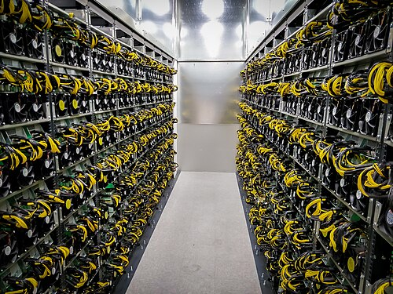

Page 1
Page 3
Page Two
The Bitcoin BlockChain
As a decentralized system, bitcoin operates without a central authority or single administrator,[76] so that anyone can create a new bitcoin address and transact without needing any approval.[6]: ch. 1 This is accomplished through a specialized distributed ledger called a blockchain that records bitcoin transactions.[77]
The blockchain is implemented as an ordered list of blocks. Each block contains the hash of the previous block, made by hashing its header twice with SHA-256,[77] chaining them in chronological order.[6]: ch. 7 [77] The blockchain is maintained by a peer-to-peer network.[30]: 215–219 Individual blocks, public addresses, and transactions within blocks are public information, and can be examined using a blockchain explorer.
Nodes validate and broadcast transactions. Each node maintains a copy of the blockchain for ownership verification.[79] A new block is created every 10 minutes on average, updating the blockchain across all nodes without central oversight. This process tracks bitcoin spending, ensuring each bitcoin is spent only once. Unlike a traditional ledger that tracks physical currency, bitcoins exist digitally as unspent outputs of transactions.
Mining
Bitcoin mining involves verifying and recording transactions on the Bitcoin blockchain, a public ledger of all transactions. Miners collect pending transactions into a block and compete to solve a computational problem called a proof-of-work, which requires finding a hash below a certain target. This process ensures the integrity and immutability of the blockchain and prevents double-spending.
Mining requires specialized hardware known as ASICs (Application-Specific Integrated Circuits) that are optimized for the SHA-256 hashing algorithm used by Bitcoin. In the early days, CPUs and GPUs were sufficient, but the increasing difficulty of mining now requires more advanced, energy-intensive equipment.
